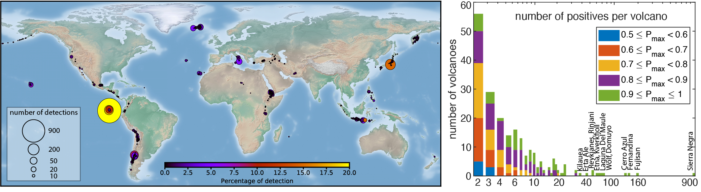

Automated Alert System for Volcanic Unrest
Vi-Lab, University of Bristol


Aim
To develop an effective and efficient automated global volcano alert system using Interferometric Synthetic Aperture Radar (InSAR) data, which can detect surface deformation, having a strong statistical link to eruption.

Automated processing and CNN detection of deformation from 592,224 wrapped interferograms of 1,084 volcanoes [May 2021]. (left) Spatial distribution of detections (P>0.5). Size represents the number of detections and colour the percentage of detections. (right) Number of detections (P>0.5) per volcano (log-scale), coloured by maximum probability (Pmax).- Presentation [PDF]
Application of Machine Learning to Classification of Volcanic Deformation in Routinely Generated InSAR Data
Recent improvements in the frequency, type, and availability of satellite images mean it is now feasible to routinely study volcanoes in remote and inaccessible regions, including those with no ground-based monitoring. In particular, Interferometric Synthetic Aperture Radar data can detect surface deformation, which has a strong statistical link to eruption. However, the data set produced by the recently launched Sentinel-1 satellite is too large to be manually analyzed on a global basis.
- Paper [PDF] [Preprint]
- Code [GitHub]
- Dataset [UoB Sharepoint]
- Real-time monitoring volcanic activities globally [COMET Volcano Portal]
A Deep Learning Approach to Detecting Volcano Deformation from Satellite Imagery using Synthetic Datasets
Satellites enable widespread, regional or global surveillance of volcanoes and can provide the first indication of volcanic unrest or eruption. Here we consider Interferometric Synthetic Aperture Radar (InSAR), which can be employed to detect surface deformation with a strong statistical link to eruption. Recent developments in technology as well as improved computational power have resulted in unprecedented quantities of monitoring data, which can no longer be inspected manually. The ability of machine learning to automatically identify signals of interest in these large InSAR datasets has already been demonstrated, but data-driven techniques, such as convolutional neutral networks (CNN) require balanced training datasets of positive and negative signals to effectively differentiate between real deformation and noise. As only a small proportion of volcanoes are deforming and atmospheric noise is ubiquitous, the use of machine learning for detecting volcanic unrest is more challenging than many other applications.
In this paper, we address this problem using synthetic interferograms to train the AlexNet CNN. The synthetic interferograms are composed of 3 parts: 1) deformation patterns based on a Monte Carlo selection of parameters for analytic forward models, 2) stratified atmospheric effects derived from weather models and 3) turbulent atmospheric effects based on statistical simulations of correlated noise. The AlexNet architecture trained with synthetic data outperforms that trained using real interferograms alone, based on classification accuracy and positive predictive value (PPV). However, the models used to generate the synthetic signals are a simplification of the natural processes, so we retrain the CNN with a combined dataset consisting of synthetic models and selected real examples, achieving a final PPV of 82%. Although applying atmospheric corrections to the entire dataset is computationally expensive, it is relatively simple to apply them to the small subset of positive results. This further improves the detection performance without a significant increase in computational burden (PPV of 100%). Thus, we demonstrate that training with synthetic examples can improve the ability of CNNs to detect volcano deformation in satellite images, and propose an efficient workflow for the development of automated systems.
- Paper [PDF] [Preprint]
- Code [GitHub]
- Dataset [UoB Sharepoint]
The Application of Convolutional Neural Networks to Detect Slow, Sustained Deformation in InSAR Time Series
{kind=link}
- Paper [PDF] [UoB PURE]